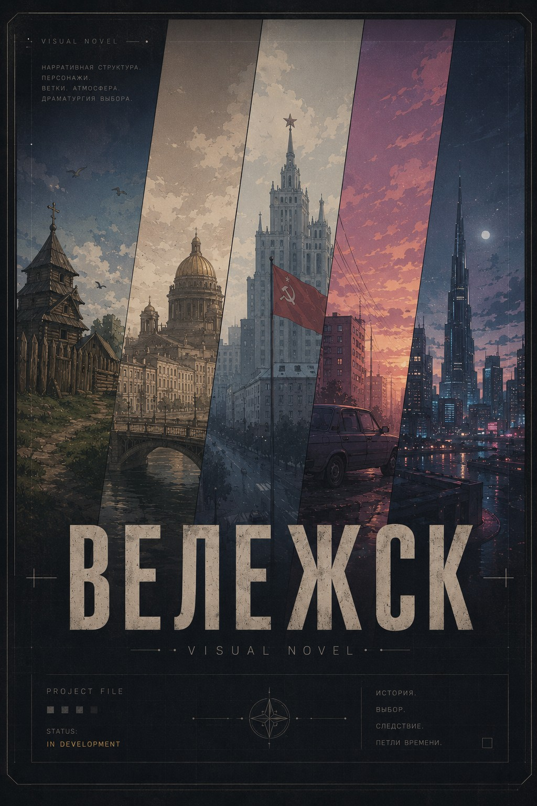
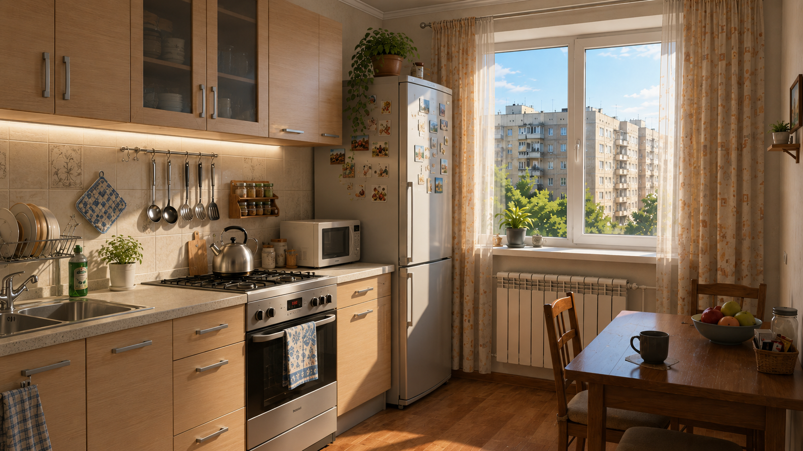
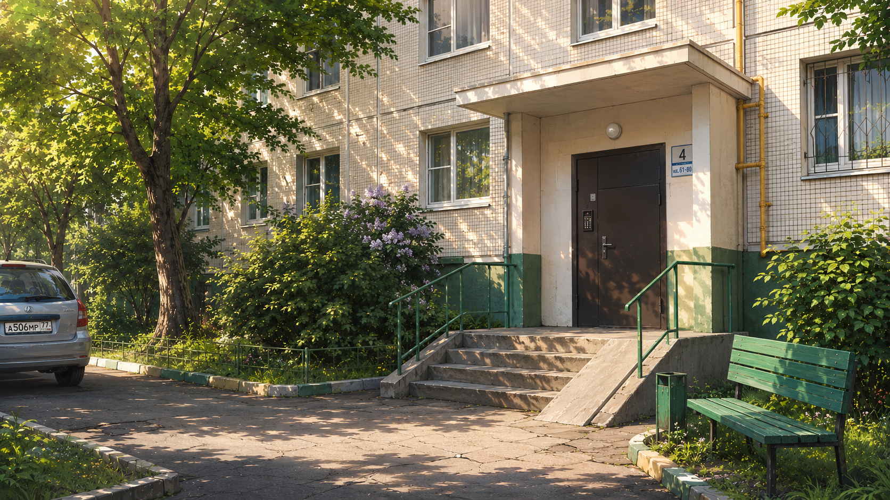

Визуальная новелла / Нарративный кейс
ВЕЛЕЖСК
Романтическая визуальная новелла о летней поездке, исторических петлях и выборе, который превращает близость, страх и ответственность в последствия.

Обзор проекта
О проекте
Ключевые особенности
Что делает проект
Исторические эпохи
Каждая ветка переносит героев в отдельный период и меняет драматический контекст.
Нелинейный сюжет
Линейное чтение поддержано флагами, отношениями и развилками внутри сцен.
Выборы игрока
Решения влияют на доверие, тон сцен, доступные варианты и финальное состояние героя.
Романтические ветки
Близость раскрывается через риск, ответственность и поступки, а не через “правильные” ответы.
Нарратив
История о взрослении через выбор
После 10 класса группа подростков уезжает в летнее путешествие. В новом городе артефакты начинают переносить их в разные эпохи, где личные отношения сталкиваются с историей, страхом и ответственностью.
В центре истории — Дима Огнев. Игрок формирует его моральную траекторию: поддержать, промолчать, рискнуть, сказать правду или избежать последствий.
Галерея
Постеры и игровые иллюстрации


Моя роль
Что я проектировал
Narrative Design
Game Design
Documentation
Story Structure
Character Routes
World Building